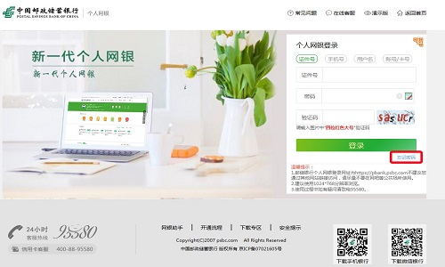
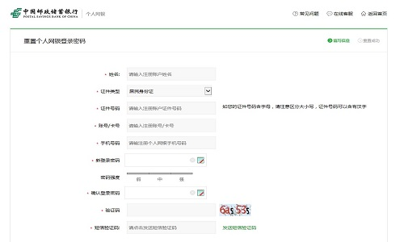

一、网银导入只支持网上银行的账号登录
本平台的网银导入服务只支持邮储银行网上银行登录，即您注册该网银的用户名、证件号码，不支持手机银行登录和企业网银登录。
邮储银行个人网上银行登录入口：https://pbank.psbc.com/perbank/html/system/login.html
二、如何确认自己登录账号、登录密码的有效性
请访问邮储银行官网（https://pbank.psbc.com/perbank/html/system/login.html）进行登录验证。如果能登录成功，请将相应登录账号和登录密码在本平台进行登录即可完成网银导入。
三、我使用U盾、数字证书登录网银怎么办
目前本平台暂不支持这类网银导入，建议您到营业网点注册开通网上银行，开通流程请参考官网（http://www.psbc.com/cn/EBanking/PersonalEBanking/1106.html），如有疑惑，可致电邮储银行客服：95580 咨询。
四、忘记网银登录密码怎么办
请直接访问邮储银行个人网上银行，点击【忘记密码】进行找回密码操作。
【忘记密码】直达链接：https://pbank.psbc.com/perbank/html/system/forgetPwdCustConfirm.html
五、常见问题
Q：提示【用户名／密码错误】，怎么办？
1、请确认您的网上银行（与手机银行不同）已经开通并激活，您可以联系客服热线（95580）确认是否已经成功开通网上银行，如若未开通网银，请携带相关证件到邻近的柜台进行开通。
2、如果已在柜台开通网银，请确认您输入的账号有效，建议您可以在官网（https://pbank.psbc.com/perbank/html/system/login.html）进行登录验证。
3、如果能在官网正常登录，仍然无法正常导入，可能是服务器繁忙，您可以稍后再试。
Q：提示【密码试错超限】，怎么办？
1、邮储银行一天内输错密码的次数是有限的，借记卡累计输错3次／信用卡累计输错3次，网银将会被锁住，建议您联系客服热线95580，或第二天确认密码后再进行尝试登录
2、如果提示【密码已锁定】，请您到邻近网店柜台重新设置个人网银登录密码。